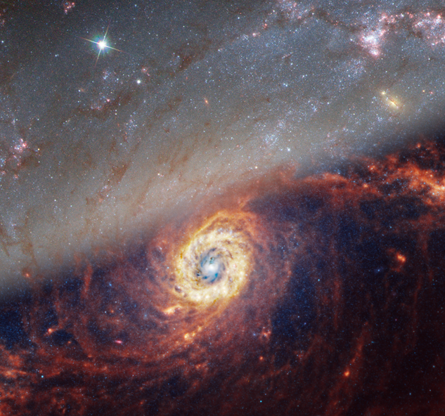

HTML5 James Web // Hubble

Liked by 4GeeksAcademy, html5, Web and 100.000 others
El día de hoy los dos telescopios más importantes, el James Webb y el Hubble, se unieron para regalarnos la imagen más detallada de la Galaxia Fantasta (M74) y sí, estamos impactadas. La M74 se ubica a unos 32 millones de años luz de la Tierra, en la constelación de Piscis, y está casi frente a la Tierra.